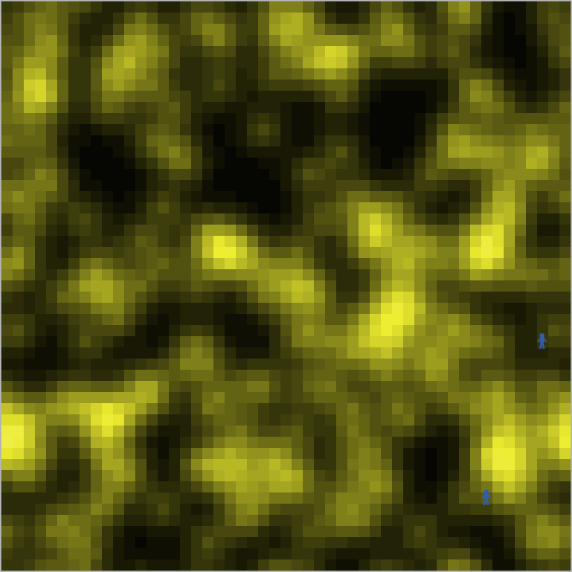
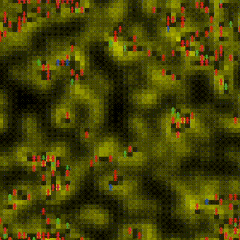
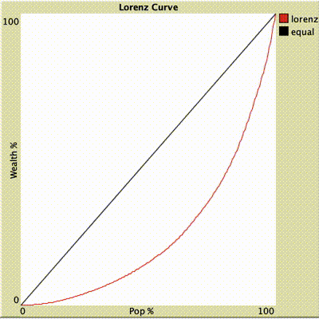
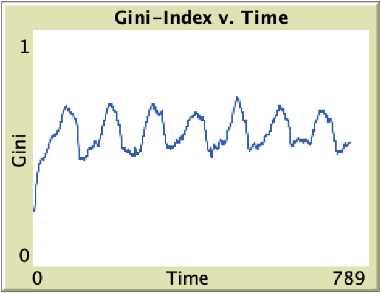
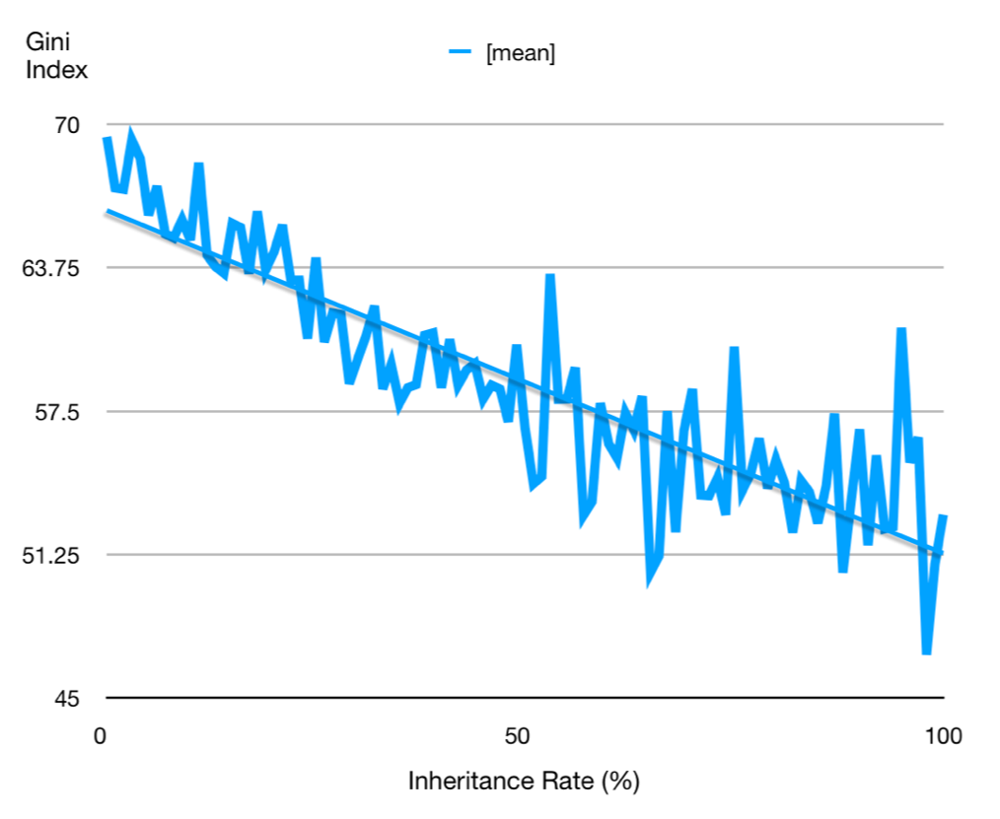

This is a story of how economic inequality takes place and how we can diminish it.
Let's start with a simple environment, where there are only patches of grains. Each patch has an amount of grain and a grain capacity (the amount of grain it can grow). As shown in the graph below, the darker a green patch, the higher its grain capacity.
Then we have people collecting grain from the patches. They need to eat the grain to survive and how much grain each person accumulates is his or her wealth. The model begins with a roughly equal wealth distribution. The people then wander around the landscape gathering as much grain as they can. Each person attempts to move in the direction where the most grain lies. Each time tick, each person eats a certain amount of grain. This amount is called their metabolism. People also have a life expectancy. When their lifespan runs out, or they run out of grain, they die and produce a single offspring. The offspring has a random metabolism and a random amount of grain, ranging from the poorest person’s amount of grain to the richest person’s amount of grain.
To observe the equity (or the inequity) of the distribution of wealth, a graphical tool called the Lorenz curve is utilized. We rank the population by their wealth and then plot the percentage of the population that owns each percentage of the wealth (e.g. 30% of the wealth is owned by 50% of the population). Hence the ranges on both axes are from 0% to 100%.
If Lorenz curve is closer towards the diagonal line, the wealth distribution is more equal.
Let's run the model, a world with no interference and unlimited resource, and see how equal is the wealth distribution.
And... our society becomes extremely inequal, as most people are in the lower class and very few people are in the middle and upper class.
However, our society does not always have large amounts of resources. Sometimes our natural conditions are good, but sometimes they are not. To reflect these changes in the model, we implement seasonal changes in grain growth. In a good season, the grain growth is good. In a bad season, the growth is bad.
It seems that in a good season, gini index is low. Rich agents are still rich, but poor agents gets poorer.
But in a bad season, gini index is high. Rich agents are still rich, and poor agents gets richer. It seems that environmental changes have limited impact on rich agents.
Periodic economic cycle can lead to periodic changes in gini index.
In different countries, different governments have diverse policies on inheritance. What about inheritance? Does inheritance have any impact on gini index?
We observe that there is some effect that inheritance has. In fact, if an offspring is allowed to inherit more, the more equal the society. Percent of Inheritance may not have huge impact on agents in upper class, since their wealth is already exceedingly large. But for agents in lower class, more inheritance means larger chance for their offspring to survive.
However, in reality, agents may give birth to more than one child. Moreover, the parent's amount that is not inherited by his/her offspring should be given to a tax agency for other usage. Hence, an improved, more realistic model is build. In the model below, agents are not only able to give birth to more than one child, but their inheritance is also taxed based on their respective classes.
See what doesn't happen? No change. The wealth distribution is still very inequal. Inheritance tax is not enough. We need to tax harvesting grain on each tick as well.
This resembles income tax in the real world. We have set two sliders for you to decide what tax rates should be charged for middle and upper class. You could also try different scenarios that ususally won't happen in reality. (For example, charge middle higher tax rates than upper class.)
Wow! Finally we see some improvement on equality, as we can observe that there are fewer agents in the lower class and number of middle class starts to grow. However, we can do better! We haven't started to use taxpayers' money to improve the wealth distribution.
First, we need to think about young and elderly. They have no working ability (as in, the ability to harvest grains). Therefore, we need to distribute grant to support young children and pension to support elderly. Secondly, we need to use the money to support lower class. In our model, we simply redistribute the rest of tax money to lower class.
In the end, we have provided some interesting interactive actions for you to try with the model. What if there is a large amount of international aid coming into the system?
What if there is a large amount of international aid coming into the system? Does international aid improve wealth distribution? Adjust aid amount and click receive aid button when running the model to try it out.
What if there is a large disaster that cause some population to die? Does disaster affect wealth distribution? Adjust percent die and click disaster button when running the model to try it out.
What if there is a sudden change in the grain environment? Does change of grain environment affect wealth distribution? Click change environment button when running the model to try it out.
1. Economic changes have more impact on the lower class.
Changing economic environment does not affect the comfortable life of a wealthy people,
but hugely affect the survival of the poorest.
2. Charge taxes improve equality in wealth distribution.
Inheritance tax and income tax may seem very little compared to the whole weath of a society,
they are effective to diminish inequality and improve the well-being of all.
3. Support the young, the elderly, and the poor.
Children cannot survive without the support of public,
and grandparents cannnot have a comfortable life without some pensions.
When the lower class does not have time and efforts to search for better resources beyond its own survival,
the society needs to provide extra financial support.